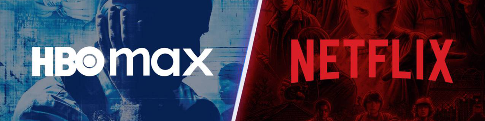
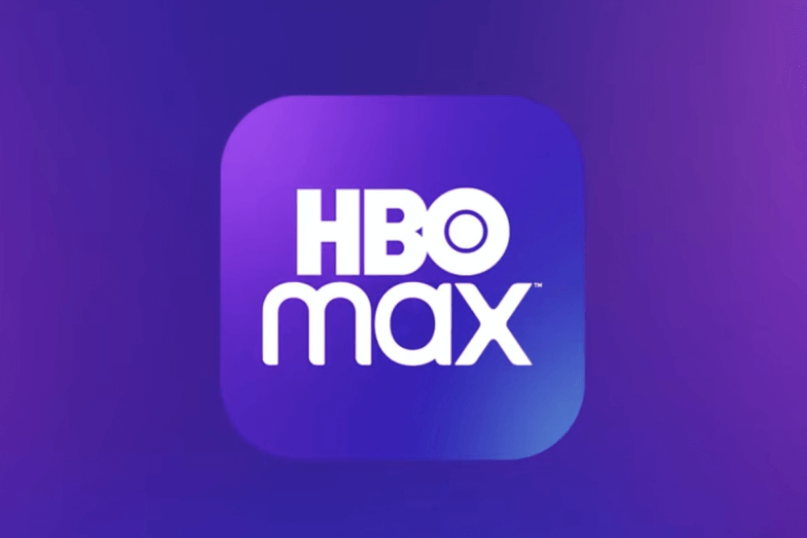
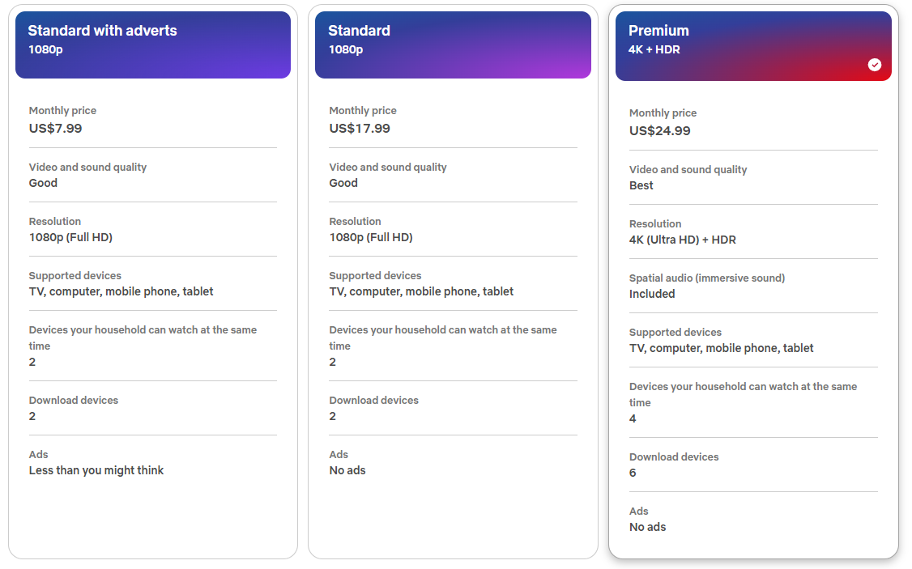
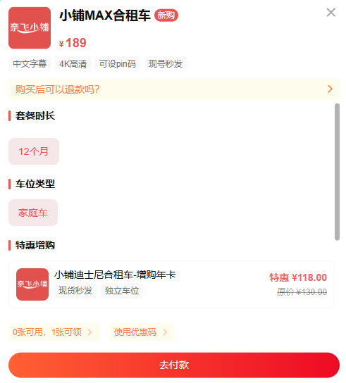
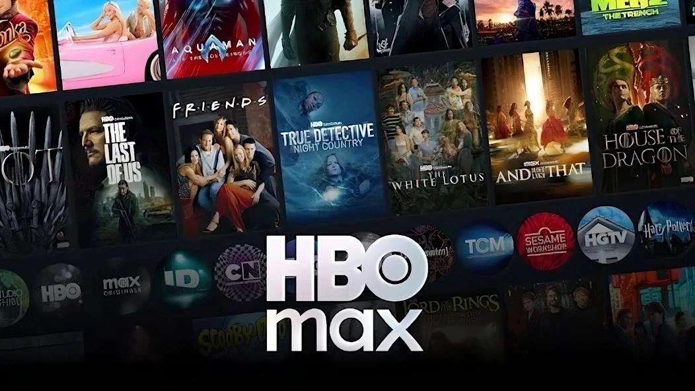
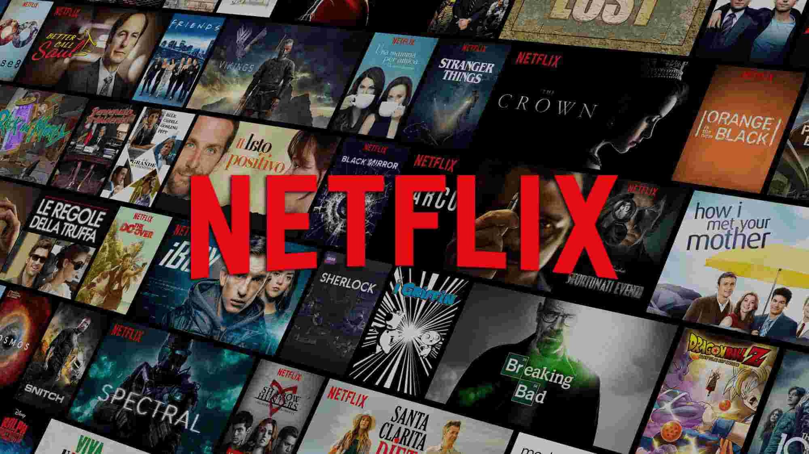

HBO Max 与 Netflix：哪个是你的最佳选择？
在多元化的流媒体市场中，HBO Max 和 Netflix 无疑是两大巨头。HBO Max 提供丰富的经典美剧和华纳兄弟的原创内容，而 Netflix 则凭借其原创作品在全球占据主导地位。近年来，两家公司在价格、内容和整体用户体验方面展开了激烈的竞争。
话虽如此，同时订阅 HBO Max 和 Netflix 可能会给你的预算带来相当大的压力。在本指南中，我将从各个角度对这两项服务进行分析和比较——涵盖你最关心的问题——以便你能够自信地选择最符合你需求的服务。😋
HBO Max 与 Netflix 概览
HBO Max：优质内容库
HBO Max 凭借其高质量的节目和电影赢得了良好的口碑。该平台不追求数量，而是奉行"重质不重量"的策略，凭借《继承之战》 、《龙之家族》和《白莲花》等广受好评的原创作品，以及《老友记》和吉卜力工作室系列等经典作品吸引观众。
对我个人而言，HBO Max 的突出之处在于它所创造的体验：每次打开应用，我都无需浪费时间在无尽的选项中寻找。它的目录感觉像是精心策划的——几乎是为我量身定制的——始终包含评分最高的、精心挑选的影片。这种"每个选择都是好的"的感觉让这个平台令人耳目一新，毫无压力。
然而，与Netflix相比，HBO Max的整体内容库规模确实较小。华纳兄弟与探索频道合并后，该平台经历了一波内容削减浪潮。《蝙蝠女》、《Gordita Chronicles》和《Raised by Wolves》等热门影片被搁置，这自然引发了人们对其内容库稳定性的担忧。 
Netflix：庞大而多样的内容库
Netflix 以其庞大而丰富的资源库而闻名，涵盖电影、电视剧、纪录片、综艺节目和动漫，足以满足几乎所有观众的需求。其原创作品遍布全球，从《怪奇物语》到本土剧集，持续引发热议和流量。
仅在美国，Netflix 就提供超过 5000 部影片，其中约 2000 部为 Netflix 原创影片。
它的优势在于内容量大、更新速度快，但劣势在于质量参差不齐，价格近年来涨幅较大，而且不提供直播和当日首播。

快速比较
为了帮助你更好地理解两者之间的差异，我准备了一张比较图表，可以让你快速概览。
| 平台 | HBO Max | Netflix | ||||
|---|---|---|---|---|---|---|
| 套餐 | 基本版(含广告) | 标准 | 优质的 | 有广告 | 标准 | 优质的 |
| 月费 | 9.99 美元 | 16.99美元 | 20.99 美元 | 7.99 美元 | 17.99 美元 | 24.99美元 |
| 年费 | 99.99 美元 | 169.99 美元 | 209.99 美元 | 不适用 | 不适用 | 不适用 |
| 广告 | ✅ | ❌ | ❌ | ✅ | ❌ | ❌ |
| 清晰度 | 1080p | 1080p | 4K 超高清 | 1080p | 1080p | 4K 超高清 + HDR |
| 同步流 | 2 | 2 | 4(运动项目限2项) | 2 | 2 | 4 |
| 下载/设备 | 0 | 30 | 100 | 2个设备 | 2个设备 | 6台设备 |
| 体育和 CNN Max | ❌ | ✅ | ✅ | ❌ | ❌ | ❌ |
虽然你可能会被 Netflix 更大的整体内容库所吸引，但值得注意的是，如果你想与家庭以外的人共享你的帐户，HBO Max 施加的限制较少。价格比较。
价格比较
下面，我将仔细研究这两项服务之间的价格差异，并为你提供每种计划的详细分类。
HBO Max 定价概览

今年5月，HBO Max恢复了原名。**幸运的是，HBO Max在更名后并未涨价。**截至2025年8月，其三个套餐等级与今年早些时候保持不变，价格如下：
带广告的基本版 ：9.99 美元/月;99.99 美元/年(按年计费可节省 19 美元)标准 ：16.99 美元/月;169.99 美元/年(按年计费可节省 33 美元)高级版 ：20.99 美元/月;209.99 美元/年(按年计费可节省 41 美元)
无论你选择哪种计划，你都可以观看 HBO Max 的电影和电视节目，以及华纳兄弟的最新发行和经典作品、动画片以及 HBO、卡通网络等的原创节目。
Netflix 定价概览
Netflix 再次上调了订阅价格，目前月费从 8 美元到 25 美元不等。总体而言，这三个套餐主要在价格、分辨率、广告、可同时观看的设备数量以及支持下载的设备数量方面有所不同。详情如下：
标准版(含广告) ：7.99 美元/月标准 ：17.99美元/月高级版 ：24.99 美元/月
Netflix 和 HBO Max 均提供三个定价等级。Netflix 的广告支持套餐更经济实惠，但无法访问完整的内容库。不过，Netflix 提供数字下载服务，而 HBO Max 则不提供。
每月付款与每年付款
HBO Max官方提供年度付款选项，以帮助你省钱，所有三个等级的价格都比按月付款便宜约 16%。
然而，Netflix 从未推出过包年套餐。它的订阅服务严格按月计费，目前没有包年折扣。😥
免费试用和折扣
HBO Max 大约五年前结束了其 7 天免费试用，此后再未恢复。
Netflix 也不再提供免费试用。该公司于 2020 年正式终止了这项政策。如果你想了解如何免费使用 Netflix 或节省更多订阅费用，可以查看我的另一篇文章。
如何以最低价格订阅 HBO Max 和 Netflix？
和你们很多人一样，我其实只需要一个订阅——最实惠的那种。所以我推荐一个更明智、更便宜的选择： 奈飞小铺。它提供 HBO Max 和 Netflix 的会员资格，价格简直令人难以置信。
例如，你可以在这里订阅 HBO Max Premium 共享账户服务，每年仅需 189元，比官方价格便宜 70% 以上，试用优惠码：songyu 还可以再打九折，实付款：189 * 0.9 = 170.1。而且你仍然可以享受相同的优势：4K 分辨率、无广告以及多设备支持。🤩 
在这里订阅Netflix Premium 的价格约为官方价格的四分之一，对于像我这样注重预算的用户来说，绝对值得一试。
内容比较
HBO Max 汇集了全球娱乐界最热门的剧集，每个 Max 套餐都包含 HBO 和华纳兄弟的完整剧集阵容。你可以畅享《继承之战》 、《工业》、《亢奋》、《真探》和《空乘人员》等热门剧集。此外，Max 还拥有大量其他经典剧集，例如《老友记》、《黑道家族》、《兄弟连》和《朽木》。 
这意味着你可以欣赏漫威的全部剧集、_星球大战_宇宙及其衍生作品，以及热门的 Hulu 原创作品，如_《将军》_、_《微小美好》_和_《大楼里的凶杀案》_。
- 《上周今夜秀-约翰·奥利弗》
- 《权力的游戏》
- 《演替》
- 《巴里》
- 《餐厅、汽车餐厅和酒吧》
- 《房屋猎人》
- 《致命捕捞》
- 《流言终结者》
- 《欣快感》
- 《真探》
- 《白莲花》
- 《切尔诺贝利》
- 《西部世界》
作为历史最悠久的流媒体平台，Netflix 的庞大内容量始终无人能及。截至 2025 年，其美国内容库已扩展至约 7，500 个，涵盖各种类型的电影、电视剧和特别节目。 
它几乎涵盖了你能想到的所有类型的内容。与严重依赖 HBO 和华纳兄弟剧集的 HBO Max 不同，Netflix 凭借其丰富的热门原创剧集阵容脱颖而出。这些剧集包括《怪奇物语》、 《纸钞屋》 、《黑钱胜地》、 《布里奇顿》和《星期三》。Netflix 还为儿童提供大量引人入胜的内容，例如《欢乐再满屋》、《希瑞与非凡公主》和《玛雅与三姐妹》。
- 《黑镜》
- 《毒枭》
- 《怪奇物语》
- 《鬼入侵》
- 《我本坚强》金米·施密特
- 《巫师》
- 《王冠》
- 《金钱抢劫》 (La Casa de Papel)
- 《鱿鱼游戏》
- 《性教育》
- 《心脏骤停》
- 《女子监狱》
- 《周三》
流媒体质量比较
在比较流媒体平台时，仅仅关注价格和内容库是不够的。画质和设备支持通常是决定整体观看体验的关键因素。下面，我将对 HBO Max 和 Netflix 进行实际测试，重点分析它们在流媒体质量和设备兼容性方面的差异。
流媒体分辨率
HBO Max 和 Netflix 均提供高达 4K 的流媒体画质，但要享受这种顶级分辨率，你需要订阅每月 20.99 美元的高级套餐。4K 的**清晰度约为 1080p 的四倍，约为 DVD 的 24 倍。**随着电视屏幕尺寸逐年增大，4K 的出现将带来显著的改变。
话虽如此，4K 也会消耗更多的数据，对于大多数观众来说，HBO Max 和 Netflix 标准无广告套餐中包含的 1080p 质量已经令人满意了。
4K 内容可用性
- Max 的 4K 库相对有限，只有大约 50 个超高清影片。
- 另一方面，Netflix 提供了丰富的 4K 目录，其中超过 1，000 部电影和连续剧支持超高清和 HDR 格式。
用户体验
" Netflix 可以在我的电脑和平板电脑上显示 4K，但 Max 只能在电视上提供 4K。 "
" Netflix 能够在我的 PC 和电视上显示 4K 和其他功能，而 Max 只能在我的 PC/笔记本电脑上提供 1080p 甚至有时 720p，而电视上却能提供 4K。 "
" 我有过同样的经历，这恰恰证明 Netflix 总体上提供了更好的 4K 流媒体质量。 "
设备使用情况比较
无论流媒体平台的内容或画质多么出色，如果你无法在自己喜欢的设备上观看，那就毫无意义。好消息是，HBO Max 和 Netflix 都支持所有常用设备。
不过，Netflix 最突出的特点是其卓越的设备兼容性——几乎无处不在。只要有屏幕，就很有可能在上面观看 Netflix。**相比之下，HBO Max 对某些老旧设备的支持较弱，而且往往需要更新的软件版本。**
接下来，我将向你介绍每个平台支持的具体设备。
不过，Netflix 最突出的特点是其卓越的设备兼容性——几乎无处不在。只要有屏幕，就很有可能在上面观看 Netflix。相比之下，HBO Max 对某些老旧设备的支持较弱，而且往往需要更新的软件版本。
接下来，我将向你介绍每个平台支持的具体设备。
HBO Max 支持的设备
Netflix 支持的设备
总体而言，我认为 Netflix 在画质和设备兼容性方面优于 HBO Max。它不仅拥有更多 4K 内容，而且跨设备的用户体验也更稳定。HBO Max 的优势仍然在于其高质量的剧集。如果设备多样性和一致的画质更重要，那么 Netflix 是更好的选择。
用户体验和评论
用户体验是选择流媒体平台的关键因素。HBO Max 和 Netflix 都提供了直观易用的界面，但也存在一些显著的差异。
Netflix 提供了更广泛的筛选条件和类别供浏览。当你将鼠标悬停在某个标题上时，预告片会自动播放，你可以点击进入每部电影或电视剧的专属页面。Netflix 还会一次性发布整季剧集，这对于像我这样的追剧爱好者来说非常完美。
另一方面，HBO Max 更倾向于营造"影院感"。其界面设计以精心策划的风格和清晰的分类，重点突出优质节目和电影。然而，其内容更新速度较慢，通常遵循每周更新的计划，这对于喜欢连续观看新剧的观众来说可能不太令人满意。
结论
在 HBO Max 和 Netflix 之间做出选择时，我不得不承认，这并非易事。这两个平台都是流媒体内容的绝佳选择，而正确的选择实际上取决于你的个人喜好。如果你更注重更大的内容库和高质量的流媒体，我推荐 Netflix。但如果你更喜欢优质、精心策划的内容，并且不介意多花点钱，那么 HBO Max 可能更适合你。
如果价格让你望而却步，我建议你试试 奈飞小铺 。这个超低价的订阅平台提供HBO Max、Netflix和许多其他服务的会员资格。作为五年的忠实用户，我真心推荐它给我所有的朋友!😊
最后，无论你选择 HBO Max 还是 Netflix，你都可以享受大量高质量内容。
常问问题
1.Netflix 可以与哪些其他流媒体服务捆绑？
Netflix 可以通过 Xfinity 的 StreamSaver 套餐与 Peacock、Apple TV+ 和 Now TV 捆绑。它还可以通过Netflix + Max Verizon 套餐(10 美元)与 Max 捆绑，并通过 +play 平台与 Starz 捆绑。
2.我可以免费获得 HBO Max 吗？
HBO Max 不提供免费试用，但你可以免费观看精选节目的第一集。
3.哪些国家有 HBO Max？
HBO Max 现已在北美、拉丁美洲、加勒比地区和欧洲部分地区上线，涵盖美国、墨西哥、丹麦、芬兰、匈牙利、荷兰、挪威、波兰、葡萄牙、西班牙、瑞典等国家。